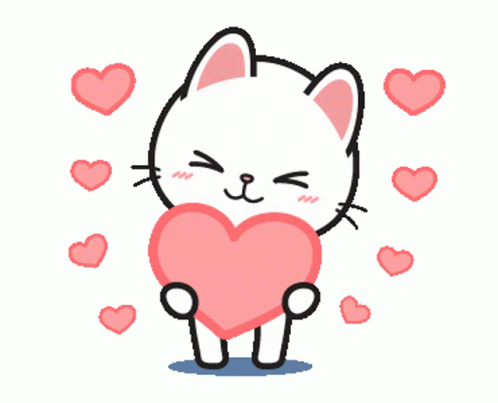

NUESTRA PLAYLIST

Tyler Shaw - Love You Still
Jhosmer & Stephanie
0:00
0:00
- 1. Tyler Shaw - Love You Still Tyler Shaw 02:31
- 2. John Legend All of me John Legend 04:30
- 3. Coldplay YellowColdplay Yellow 04:31
- 4. Elvis Presley - Can't Help Falling In Love Elvis Presley 03:06
- 5. Harry Styles - Adore YouHarry Styles 03:29
- 6. until I found you Stephen Sanchez ftStephen Sanchez 02:53
- 7. Milo j - La Vida Era Más Corta Milo J 03:15
- 8. Milo J - Niño MiloJ 03:30
- 9. NF - Lost In The Moment NF 04:02
- 10. NF - RUNNING NF 04:13
Dicen que la música es el idioma del alma, y quise hablarte en él. Las primeras seis canciones de esta lista llevan impreso todo lo que mi corazón siente por ti, dedicándote lo que me recuerda a tu mirada y a lo mucho que te adoro. Cada latido y cada pensamiento que me lleva a tu lado. Las cuatro siguientes son tus favoritas, esas melodías que ya forman parte de ti y que quise guardar aquí, no solo porque sé cuánto las amas, sino porque todo lo que te hace feliz me importa profundamente.
Cada acorde aquí tiene una sola misión: hacerte sonreír y recordarte que, sin importar los kilómetros, mi corazón late cerquita del tuyo. Esperando con ilusión el día en que podamos compartirlas y cantarlas juntos